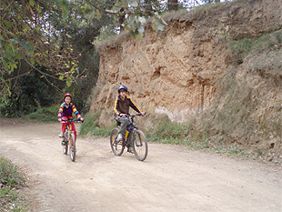

|
En bicicleta hasta Sant Cugat

 |
|
Si habéis llevado las bicicletas, os proponemos
un paseo con niños para descubrir el Parc de Collserola y sus rincones
en bicicleta. La ruta se puede hacer con niños a partir de
8 años. El recorrido total incluyendo ida y vuelta es de 4,6 km y no presenta dificultades ni desniveles.
Cerca del final del recorrido, encontraréis el Pi d'en Xandri, su historia la encontraréis resumida en una pequeña placa en los pies del árbol. |
Éste es uno de los 10 paseos para hacer con la familia en bicicleta que encontraréis en la "Guia del Parc de Collserola en bicicleta de muntanya" que contiene un total de 27 recorridos.
Durada: 1 hora a ritmo suave (ida y vuelta)
Distancia: 2,3 km
Dificultad: media-baja. Pista ancha
[ Ver mapa ]
|
|